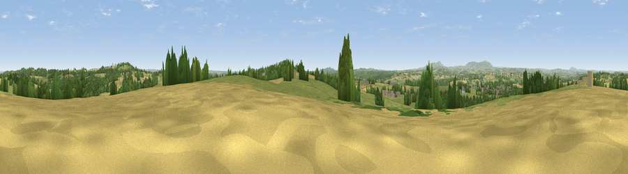

Viewpoint near Alveley
#13604 in England · top 23% of its area beats it · near Alveley · access?Where it is
The exact computed spot (SO 77825 83975). Click the marker for map links.
Public access: no public right of way or access land is recorded at this exact spot — it may be on private land. Computed from Natural England's CRoW access layer and OpenStreetMap rights of way — not the legal definitive map. Always verify locally.
The view, rendered

A 360° render of this exact spot computed from the terrain model, tree cover and land cover — summer colours, afternoon light, calibrated against photographs of famous viewpoints. Real trees, hedges and buildings will differ in detail.
The panorama
Grey silhouette: terrain skyline in each direction (720 bearings, Earth curvature and refraction included). Dashed green: skyline with trees (+15 m) and buildings (+8 m) as obstacles. Blue strip: how far the ground is visible on each bearing.
Where the view opens
Wedge length = distance to the farthest visible ground on that bearing (vegetation-aware). Rings at 10, 25 and 50 km.
What fills the view
46% grassland · 30% cropland · 20% woodland · 2% built-up ·
Angular shares of the visible panorama (visual magnitude), not map area. Landscape diversity 0.50 (0–1 Shannon).
Key numbers
More beautiful places nearby
The staircase of upgrades: each row has a higher view potential than everything closer. Driving times are estimates from straight-line distance, calibrated against real road routing — check an actual route before setting out.
| Place | Direction | Drive | Score |
|---|---|---|---|
| Viewpoint near Enville | ENE · 3 km | ~7 min | 65.7 |
| Viewpoint near Enville | ENE · 3 km | ~8 min | 73.1 |
| Knowle Hill | WSW · 9 km | ~17 min | 75.5 |
| Viewpoint near Abberley | S · 17 km | ~30 min | 77.5 |
| Abberley Hill | S · 17 km | ~30 min | 80.4 |
| Viewpoint near Burwarton | W · 18 km | ~31 min | 83.4 |
| Titterstone Clee | WSW · 20 km | ~33 min | 83.8 |
| Viewpoint near Little Wenlock | NNW · 28 km | ~45 min | 86.6 |
52.45327, -2.32774 · source: screening · position refined by local search. Computed location — check access rights before visiting.